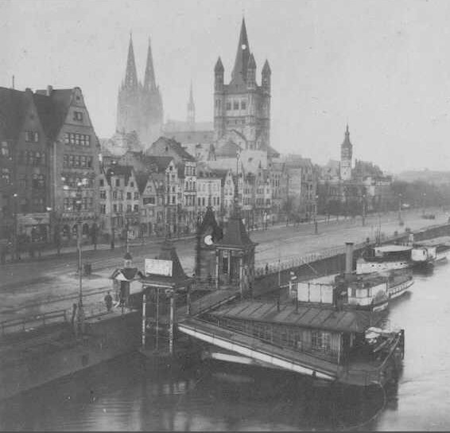
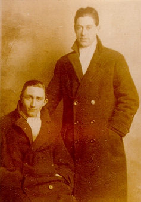
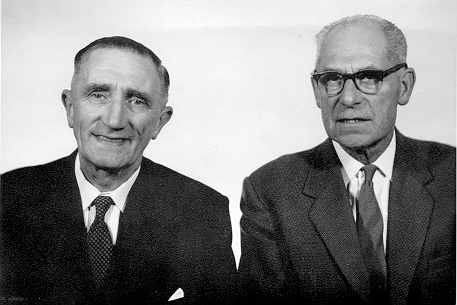
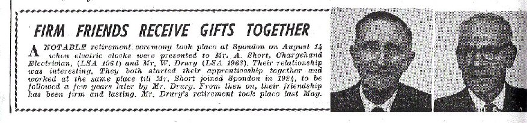

1918/19
(text in italics is extracted from the 11th Leicesters War Diary)
The official disbandment of the 2/5 Leicesters took place on 3 February 1918, but a few days before a large contingent were transferred to the 11th Leicestershire Regiment including Bill Drury , George Bexon, Harley Noon, James Thurman, George Ward, Rudolph Bennett, George Walker, and Fred Cotton. The 11th Leicesters were a Pioneer Battalion attached to the 6th Division. Pioneers were charged with a whole range of construction works but were also armed as fighting infantry. Survival rates in pioneer battalions were higher than other infantry battalions as they were not expected to 'go over the top' with leading waves in an attack but they were very much front line troops. At the time of Bill's transfer they were in billets at Fremicourt and engaged in trench works. Bill joined "D" Company.
30/1/1918 - Fremicourt. 154 NCO's and men and 9 officers report for duty from the 2/5 Leicesters. Trench works, road and general repairs.
The battalion continued with general repairs and trench works throughout the month of January and February. During this period the Germans were building up for their last major offensive of the War. 21 March 1918 would mark the start of the German Spring Offensive.
21/3/1918 - Fremicourt . At 12.10am received orders from Division to ‘Stand To’ in the Vaulx-Morchies line from about C.20.d. to about J.5.b. Companies were in position by 5.00am. The enemy attacked heavily, after an intense bombardment (which lasted from about 5.00am) at 8.00am and established themselves in position in front of the wire of the Vaulx-Morchies line by the evening. At 10.00pm the rations, water and ammunition were sent up to Companies original billets. At 5.30pm received message from Sergeant N. H. A. Barradell, acting Company Sergeant Major of “D” Company to the effect that all the officers of his Company had become casualties and that he was in command of the Company. Six officers and about 30 other ranks were sent up from HQ to reinforce “D” Company.
The battalion endured the full force of the preliminary German bombardment. As the attack began the 11th Leicesters found themselves engaged in a fierce firefight with German stormtroopers. Casualties were high.
22/3/1918 - Fremicourt . At 9.30am transport moved back to about H.13.c. Sheet 57c. Two Platoons of “C” Company withdrawn in the morning to the Army line about J.8. and 9 sheet 57c. and the remaining two in the afternoon. At 6.00pm all HQ details moved up and dug in and occupied a line just behind the Army line about J.14.b. At 4.00pm transport moved to Pioneer Camp, Logeast Wood G.1.b sheet 57c. One man of the transport was killed by shell fire. What remained of the Companies were withdrawn to the new line J.14.b.
Total casualties of the operations: - 2nd Lt. A. Ashton, 2nd Lt. C. Millward and 2nd Lt. W. Baxter were killed in action. Capt. R. Bentley, Lt. H. H. Grundtvig MC, Lt. F. J. Meggitt, 2nd Lt. R. J. Naylor, 2nd Lt. O. H. Sewell, 2nd Lt. E. Bedson, 2nd Lt. C. O. R. Stevison were wounded. Capt. J. C. Spencer, Lt. A. L. Hicks, 2nd Lt. N. H. Stevenson, 2nd Lt. A. Summers are missing. 30 other ranks were killed, 106 wounded and 81 missing.
23/3/1918 - Fremicourt. Move to Achiet Le Grand. 2.30am battalion move off and march via Baupaume, Achiet Le Grand to Pioneer Camp, Logeast Wood. Billeted. 9am Enemy broken through near Mory. Battalion ordered to occupy outpost positions on the eastern edge of Longeast Wood. 11am Dug in. 6pm ordered to withdraw to Pioneer Camp.
24/3/1918 - Stood to in outpost positions in front of Longeast Wood. 11.15am March to Pussieux-Au-Mont, entrained for Doullens.
25/3/1918 - Arrive at Doullens, detrained and marched to the Citadel.
26/3/1918 - Entrained at Doullens Station for Proven (Belgium). 7pm arrive and march to F Camp.
27/3/1918 - 8.30am March off and billeted at Ryveld.
28/3/1918 - Ryveld. Training and re-equipping.
3/4/1918 - 7am March to Remu Siding. Light railway to Hellfire Corner. Billeted at White Chateau.
4/4/1918 - White Chateau. Work on forward roads. Number of casualties. 'Stood to' awaiting attack.
15/4/1918 - 5pm received orders to evacuate Ypres Salient and general withdraw east of Ypres .
By April the situation was critical all along the front. The German advance was securing gains and forcing the allies to withdraw.
16/4/1918 - Moved to Carbine Camp.
17/4/1918 - Work on constructing a new line.
26/4/1918 - Withdrawal of division to new line French Farm - Zillebeke Lake - White Chateau.
27/4/1918 - Trench work.
29/4/1918 - Brandhoek. 'Stood to' and manned battle stations in Vlamertinghe - Hallabast line. Company heavily shelled.
30/4/1918 - Hollis Camp. Trench work and wiring.
1/5/1918 - Hollis Camp/Brandhoek . Trench work. Demolition of hutments.
4/5/1918 - 'Stood to' in Vlamertinghe line. Demolition and removal of hutments.
The battalion continued work through May on consolidation of the line and dismantling of the camp and loading huts for removal
16/5/1918 - Gas attack. 29 casualties.
19/5/1918 - Gas shelling. Enemy attack expected.
20/5/1918 - Shell fire.
21/5/1918 - Shell fire.
22/5/1918 - Repairs to trench.
7/6/1918 - Move from Brandhoek by light railway on relief by 18th Middlesex Rgt.
The 6th Division relieved the French 46th Division in the Dickebusch front.
27/6/1918 - Arran Farm. Relieve a French battalion and occupy billets.
28/6/1918 - Wiring and digging Dickebush line.
7/7/1918 - Heavy shelling and air bombing. Explosion of Brigade ammunition dump.
8/7/1918 - Heavy thunderstorms.
The entry of the United States into the war was now becoming more apparent with the arrival of more American troops on the front. In August the 6th Division was relieved by the 27th American Division.
21/8/1918 - Bussenboom. Relieved by 102nd American Engineers. 10pm entrained at Christchurch Siding for Remy (Details Camp).
22/8/1918 - Details Camp (nr Watou).
23/8/1918 - Move to Salperwick. Training.
28/8/1918 - Move to Moule in billets. Firing practise and training.
1/9/1918 - Entrained at St Omer for Corbie. Arrive at Corbie and march to Lahoussoye.
3/9/1918 - Rest and training.
11/9/1918 - Move to Corbie and occupy billets in Rue de Victor Hugo. At Corbie continue training.
13/9/1918 - By route march and bus to Tetry.
The fortunes of the allies had turned and this time it was the Germans now in retreat. Warfare had now become more open and mobile and Pioneers were employed at the front consolidating gains and repairing roads.
15/9/1918 - Employed in forward areas on road work.
18/9/1918 - Consolidation of gains during the divisional attack.
On 18 August the 6th Division attacked the high ground overlooking St Quentin. The Attack was held up by Quadrilateral but finally gained by the 25 August.
24/9/1918 - Divisional Reserve.
30/9/1918 - Move to Hancourt.
1/10/1918 - Hancourt. Training and cleaning up. Took charge of the POW cage at Vermand.
4/10/1918 - March to Bellenglise - Magny La Fosse area. Training and cleaning.
The general attack continued towards Bohain and all objectives were gained. The attack continued on 9 October under a dawn barrage and Bohain itself was eventually captured.
8/10/1918 - Magny La Fosse. Divisional attack successful. Move to Joncourt. Billet in old Bosche dug out.
10/10/1918 - Advance continued. Captured Bohain Vaux and Igny.
12/10/1918 - Bohain.
17/10/1918 - Divisional attack successful. Road repairs in captured areas.
20/10/1918 - Move to St Souplet. Road and bridge repairs.
The Division relieved the 30th American Division in St Souplet and continued the general attack to gain high ground overlooking the Sambre Canal.
31/10/1918 - Move to La Haie Menneresse. Work on roads.
7/11/1918 - Move to Catillon. Road repairs.
10/11/1918 - Move to Prisches and Cartignies. Road repairs.
11/11/1918 - Cartignies. The battalion worked as before. 11am hostilities ceased, the enemy having accepted the terms of the armistice, handed to their delegation by Marshall Foche.
The Divisional history states that news of the armistice was received by the troops in their billets with calm satisfaction and relief. The 6th Division was now part of the Second Army. The Second Army had been assigned the task of occupying Germany.
12/11/1918 - Move to Avesnes. Road repairs.
14/11/1918 - 2200 hours. Receive divisional orders to 'March to the Rhine'.
Once the order was received the period from the 14-19 November was spent assembling the Division and making preparations for the long march to the Rhine.
18/11/1918 - Final preparations for movement of the battalion.
19/11/1918 - March to Beaurieux and billeted.
The march resembled the progression of a snake, the rear group moving forward at each advance to the area occupied each day by the leading group. The Pioneers were among those troops leading the march, repairing roads, finding water and making preparations for the following columns. Marching generally by only one road the length of the Division, when billeted, varied from ten to twenty five miles.
20/11/1918 - To Donstiennes. Rested.
23/11/1918 - To Walcourt.
24/11/1918 - To Morialme.
25/11/1918 - Oret. Clean up and rested. Training.
There were long halts, particularly between 25 November and 4 December. This was not simply a rest period but was made necessary by the difficulty of feeding the leading troops. There were also problems caused by the destruction done by the retreating Germans to railways and roads and owing the to the withdrawal of German forces not being carried out to the agreed schedule. Sometimes groups did not move at all or made minor adjustments to obtain more comfortable accommodation.
4/12/1918 - Move to Bioul.
5/12/1918 - Durnal
6/12/1918 - Durnal. Rest and clean.
March halted.
8/12/1918 - Soree.
9/12/1918 - Vierset - Barse.
March halted. The march from the Dinant across the Ardennes and along the valley of the River Ambleve was described as picturesque although from time to time the weather was said to be "vile".
11/12/1918 - Athienes
12/12/1918 - Sougne
13/12/1918 - La Gleize
Up to the Belgian frontier the roads were cratered and bridges were blown down. This impeded the march. Once across the frontier the roads were of good quality and the inhabitants hospitable. Troops had worked hard on their equipment. Leather and metal gleamed and the column entered Germany with drums beating and colours flying on 13th December. The attitude of the German population was not hostile and as troops crossed the frontier in the pouring rain German women lit fires to help the troops dry their clothes.
14/12/1918 - Malmedy. Crossed the German frontier 2km east of Malmedy.
15/12/1918 - To Elsenborn and Nidrum.
Elsenborn was formerly a German army camp and the huts occupied by the members of the Division had been used to assemble the German army of 1914 which invaded Belgium.
16/12/1918 - To Mutzenich
Division halted before continuing its march to its allotted area south-west of Cologne.
19/12/1918 - To Morsbach
20/12/1918 - To Mechernich
21/12/1918 - To Enzen
22/12/1918 - To Klein Vernich. Cleaning and training.
31/12/1918 - To Sechtem
The route of 220 miles was completed in 41 days and it was "with a great feeling of gratitude and elation that the Division ate their Christmas dinner on the Rhine in December 1918."

The area allotted to the 6th Division was a strip of country almost rectangular in shape, with a maximum length of twenty miles and breadth of 12 miles lying to the immediate southwest of Cologne. Troops were involved in the civil administration of this area and although the local populace were orderly there were heavy guard and night patrols.
1/2/1919 - General Plumer presented a colour to the 11th Leicesters.
The occupying troops settled down to improving their billets and to education. Their were frequent lectures on a range of subjects and specialist lecturers were sent out from England. It was reported that football pitches were in short supply (as the Germans did not play football). However troops were impressed to find electric light in even the tiniest of cottages and at least one concert room in the smallest of villages. In the evening entertainment was provided bt the 'Tiger Pips' concert party.
4/2/1919 - "D" Company moved from Sechtem to Weilwerswist under Divisional orders for work - constructing a rifle range.
18/3/1919 - "D" Company moved by march to Kiersberg entraining there for Mechernich where they detrained and marched to billets at Lovenich .
22/3/1919 - "D" Company from Lovenich to billets at Schwerfen .
Orders were finally received that the 6th Division would cease to exist from mid March 1919. On March 15th the Divisional units, including the Pioneers were transferred to the new Midland Division. In early April large numbers, including all of D Company were moved to the 'Concentration Camp' at Duran for 'dispersal'.
As for Bill Drury, he was finally demobilised at Catterick in April 1919.

Bill Drury and friend 'Shortie' (Archie Short)
shortly after demobilisation at Catterick...

Bill began his apprenticeship at Loughborough Brush with Archie Short. The two then served together during the war and the two
then returned home and worked together at British Celanese (later Courtaulds) in Spondon. They retired together in 1964.
